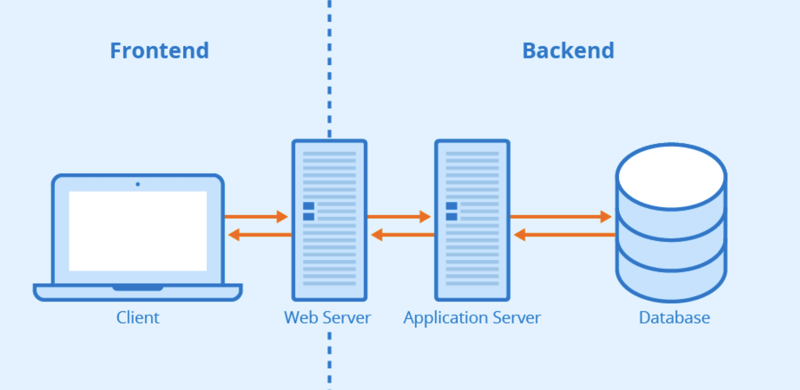
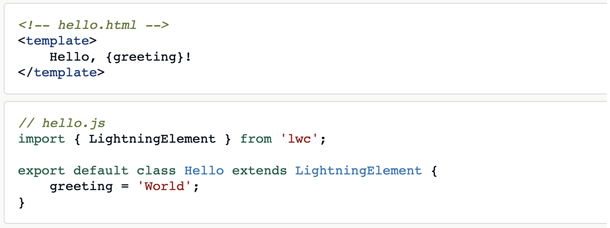

LWC Questions
Aura Vs LWC
Aura components and Lightning web components can coexist and interoperate, and they share the same high level services:
- Aura components and Lightning web components can coexist on the same page
- Aura components can include Lightning web components
- Aura components and Lightning web components share the same base Lightning components. Base Lightning components were already implemented as Lightning web components.
- Aura components and Lightning web components share the same underlying services (Lightning Data Service, User Interface API, etc.)
What Is Data Binding In Lightning Web Component?
In simple words when you map your data from the backend(JS) to the front end(HTML) that’s called data binding in LWC.
Different Ways Of Data Binding
There are two way to data binding in LWC.
- Using Expressions
- Using getter properties
#1. Using Expressions
Below is a simple example of how to bind the data using expressions.
#1.1. Using Dynamic Expressions
Below is a simple example of how to bind the data using Dynamic Expressions.
#2. Using getter properties
To compute a value for a property, use a JavaScript getter. For example, to convert the name to all uppercase letters, use a getter function in the JavaScript class, not an expression in the template.

Type Of Decorators In Lightning Web Component
we have three unique decorators that add functionality to a function or property. Decorators dynamically alter or modify the functionality
There are three type of Decorators in Lightning web components.
- @api: This annotation is used to define a public property that can be accessed by other components.
- @wire: This annotation is used to connect a component to an Apex method or a wire adapter.
- @track: This annotation defines a reactive property that causes the component to re-render when the property changes.
What Are Lifecycle Hooks In Lightning Web Component?
- Constructor() - Invoked when the instance of the component is created, this is similar to the init() method in the aura component.
- Child elements can’t be accessed because they don’t exist yet
- Element properties are assigned to the component after construction, so do not access them as they are not yet in existence (public properties decorated with @api)
- It is necessary to invoke super() from the constructor, since the Lightning web component extends LightningElement which has a constructor and is not supposed to bypass the parent class constructor (To assign the correct property (prototype) and set a value to ‘this’ attribute)
- ConnectedCallback() - ConnectedCallback() Invoked when the component is inserted into DOM.
- Child elements can’t be accessed because they don’t exist yet
- This hook flows from parent component to child component
- Eventually this method is invoked, all the public properties (decorated with @api) would have been received from the parent component by which we can call an apex method which requires these public properties as input parameters.
- In order to verify if a component is connected to DOM, the isConnected property can be used
- Parent elements can be accessed and modified in this lifecycle hook
- Render() - Render() Invoked after the execution of connectedCallback() method.
- Flows from parent component to child component
- Rendering process can be controlled by conditionally rendering the template on the basis of certain conditions or criteria
- This hook is not technically a lifecycle hook. It is protected method on the LightningElement class
- rendercallback() -Invoked when a component is completely rendered on UI.
- Flows from child component to parent component
- This hook should be used cautiously so that an infinite rendering loop is not triggered since this hook is called after the component gets rendered every time
- Make sure to use a private boolean property like isRendered to track whether renderedCallback() has been executed
- Not recommended to use renderedCallback() to change the state of the component instead use getter and setter
- Reactive property in renderedCallback() leads to infinite loop
- DisconnectedCallback() - Invoked when a component is removed from DOM. Flows from parent component to child component
- ErrorCallback( error ,stack) -ErrorCallback() Invoked when the component throws error in one of the lifecycle hooks (instantiating the component, connecting or rendering)
- Similar to JavaScript catch{} block, error and stack are the two arguments.error is javascript native error object whereas stack is a string
- To capture the stack information and render a different template when error is occurred
For more Details Visit here Apex Hours.
What Is Events In Lightning Web Components?
- Parent to Child Event communication in Lightning web component
- Custom Event Communication in Lightning Web Component (Child to Parent )
- Publish Subscriber model
Parent- Child
<c-child-comp ></c-child-comp> child- parent
let ev = new CustomEvent('childmethod', {detail : paramData );
this.dispatchEvent(ev); How can you render multiple templates in LWC?
In LWC, we can display multiple templates conditionally based on the component's state using the if:true directive.
Here's an example of how to display multiple templates in LWC:
<template>
<template if:true={showTemplate1}>
<p>This is template 1</p>
</template>
<template if:true={showTemplate2}>
<p>This is template 2</p>
</template>
</template>
Can we call the @AuraEnabled function in the apex class using wire ?
Function also needs to have cacheable = true annotation ie should be like @AuraEnabled(cacheable = true)
What is the difference between event.StopPropogation() and Event.preventDefault()?
stopPropagation prevents further propagation of the current event in the capturing and bubbling phases. preventDefault prevents the default action the browser makes on that event.
How can we navigate user from LWC component to record detail page?
Can be done using NavigationMixin service
Can i call function annotated with @AuraEnabled(cacheable= true) imperatively ?
Yes
Explain the different ways of retrieving data from apex in lwc ?
Imperative Apex Method Calls
Wire Service
Lightning Data Service (LDS)
Platform Events
Imperative Apex Method Calls
import fetchDataFromApex from '@salesforce/apex/MyController.fetchDataFromApex';
// Inside your JavaScript code
fetchDataFromApex({ params })
.then(result => {
// Handle the result data
})
.catch(error => {
// Handle any errors
});
Wire Service
import fetchDataFromApex from '@salesforce/apex/MyController.fetchDataFromApex';
@wire(fetchDataFromApex, { params })
wiredData;
// Access data in the component
get data() {
return this.wiredData.data;
}
Lightning Data Service (LDS)
import { LightningElement, wire } from 'lwc';
import { getRecord } from 'lightning/uiRecordApi';
const FIELDS = ['Account.Name', 'Account.Type'];
export default class MyComponent extends LightningElement {
@wire(getRecord, { recordId: '001234567890abcd', fields: FIELDS })
account;
get name() {
return this.account.data.fields.Name.value;
}
get type() {
return this.account.data.fields.Type.value;
}
}
Platform Events
import { subscribe, unsubscribe, MessageContext } from 'lightning/messageService';
import MY_EVENT from '@salesforce/messageChannel/My_Event__c';
export default class MyComponent extends LightningElement {
@wire(MessageContext)
messageContext;
subscription = null;
connectedCallback() {
this.subscribeToMyEvent();
}
subscribeToMyEvent() {
if (!this.subscription) {
this.subscription = subscribe(
this.messageContext,
MY_EVENT,
(message) => {
// Handle the message (data) received
}
);
}
}
disconnectedCallback() {
unsubscribe(this.subscription);
this.subscription = null;
}
}